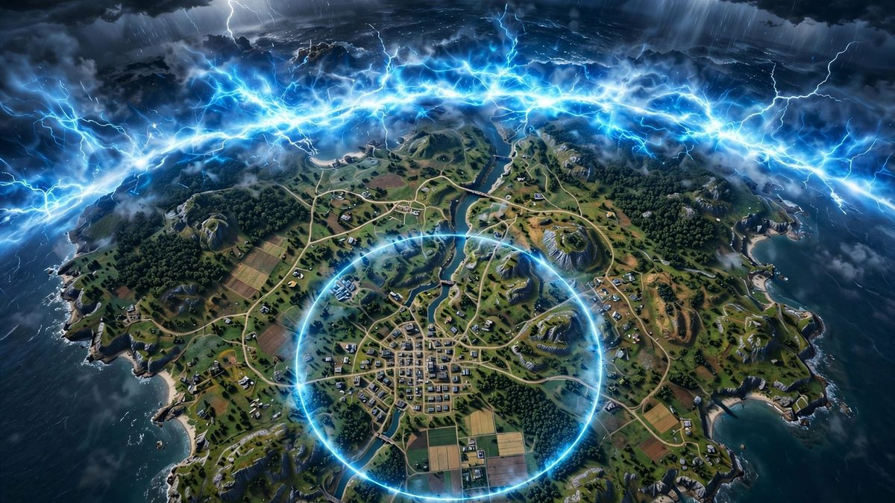

Zone Rotation Guide: Never Get Caught Outside the Circle

The blue zone kills more PUBG players than any weapon in the game. It is not because the zone is unfair, but because so many players treat it as background noise until it starts draining their health. A player caught outside the circle in the late game loses health fast and gets shot by someone who rotated five minutes earlier. Good rotation is the most reliable skill in PUBG: it costs nothing and works in every match.
Understanding the Zone Phases
The zone shrinks in phases, and each phase is faster and more punishing than the last. In the first phase, the circle is huge, the wait time is long and the damage outside it is small, so you can loot freely and even take a fight or two. By the third and fourth phases, the circle is much smaller, the wait time drops to under a minute, and the damage per second climbs sharply. In the final phases, being outside the zone for even ten seconds can cost you half your health. The key lesson is that the zone punishes lateness more and more as the match goes on, so your rotations need to get earlier and more decisive in the late game.
Open your map often. Check the white circle, the blue circle and the timer every time you finish looting or a fight. The white circle is where the safe zone will be; the blue circle is where the damage starts. Plan your move the moment the new white circle appears, not when the blue wall is already closing in on you.
When to Rotate: Early Beats Late
The single best rotation habit is to move early. As soon as the next circle is revealed, decide where you are going and start moving while other players are still looting. Early rotators get first choice of compounds, ridges and buildings inside the new zone, and they can set up and wait for the late rotators to run into their sights. Late rotators get the leftovers: the exposed edge of the circle, the open field with no cover, and the enemies who are already waiting for them.
Early vs late rotation
| Timing | Advantages | Risks |
|---|---|---|
| Early | Best positions, quiet routes, time to heal | May need to rotate again if circle shifts |
| Mid | Balanced, zone direction is clearer | More players moving at once |
| Late | Knows exactly where the zone ends | Heavy zone damage, ambushes, open ground |
One exception: if the circle is far away and you have a vehicle, you can loot a little longer, because a car covers the distance quickly. But leave with time to spare: a vehicle that runs out of fuel halfway leaves you worse off than if you had walked early.
Choosing Your Route
A straight line to the zone is almost never the best route. The best route uses terrain to hide you: ridges, valleys, tree lines and the edges of towns. On Erangel, the hills and river valley hide you from long sightlines. On Miramar, the canyons and ridges give you covered approaches. On Sanhok, the jungle is cover, but the open rice fields are death traps, so stick to the tree line. Never run across a field while the zone is closing, because every player inside the circle will be watching that crossing.
Think about where other players will be. The edge of the circle is crowded with players rotating in, so the centre is often quieter. Compounds near the centre are popular and often already taken, so approach carefully: scout from a distance, listen for gunfire and check for parked vehicles before you walk in. Sometimes the best position is a ridge or a dip just outside a compound, where you can watch the building and shoot anyone who leaves it.
Surviving When You Are Caught Out
Sometimes, despite your best planning, you will be caught outside the zone. Do not panic. First, use a boost item such as an energy drink or painkillers, because the healing from a full boost bar can offset the zone damage for a while. Second, keep moving toward the circle, but do it smartly: use cover, avoid open ground and do not stop to fight unless you have no choice. Third, if you have a vehicle, use it, even if it is damaged. The players who survive being caught out stay calm, keep moving and treat the zone as a timer they can manage, not a death sentence.
Frequently Asked Questions
How much damage does the blue zone do?
It depends on the phase. Early phases deal very little damage per second, so you can stay outside briefly without much risk. Late phases deal heavy damage per second, and the final circles can drain your health in seconds. The exact numbers change with updates, but the pattern is always the same: each phase hurts more than the last, so respect the zone more as the match goes on.
Should I always rotate to the centre of the circle?
Usually yes, because the next circle tends to shrink toward the centre of the current one. A central position gives you the most options when the next zone appears. The exception is when the centre is a wide open field with no cover; in that case, take a strong position near the centre, such as a ridge or a compound on the edge of the open ground.
Is it better to walk or drive to the zone?
Drive when the distance is long, the terrain is open and you have a healthy vehicle. Walk when the distance is short, the route has good cover, or the zone is close enough that driving would give away your position. In the late game, walking is usually better because vehicles are loud and the distances are small.
Download PUBG: Battlegrounds
Play free on PC or mobile — download the official game from the links below.